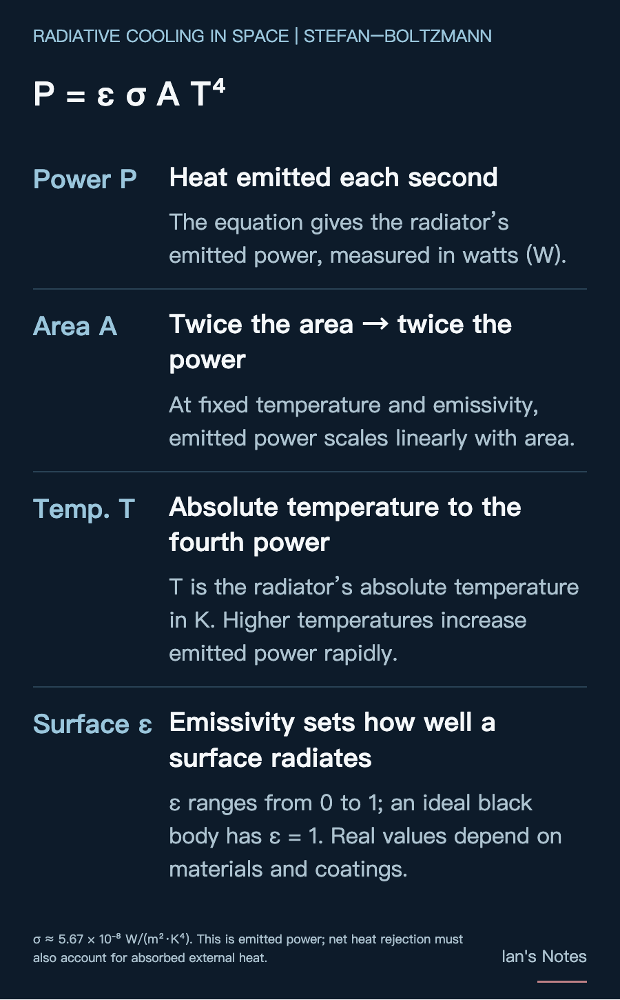
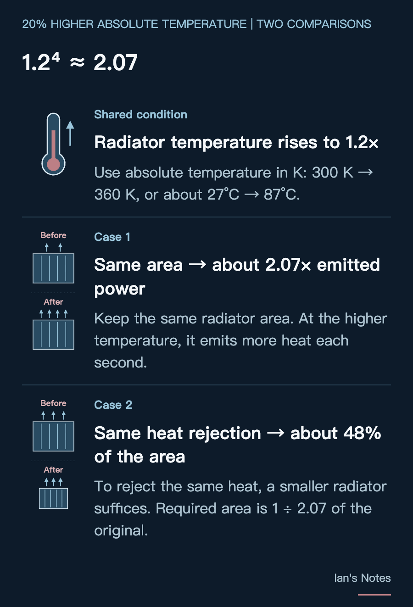

In an interview, Elon Musk said that raising the operating temperature by 20% on the absolute temperature scale, in K, could roughly halve radiator mass. Why would running chips at higher temperatures help with cooling in space? The answer starts with how heat leaves a spacecraft.
On Earth, servers use air or coolant to carry heat away. Facility equipment then rejects that heat outdoors, for example through air convection or water evaporation in a cooling tower. As long as the chips can still be adequately cooled, allowing a higher coolant temperature can also reduce the use of chillers.
Outside a spacecraft is a vacuum, with no surrounding air to carry heat away. Consumable-water phase-change cooling, such as a spacesuit sublimator, is possible, but its water supply must be replenished. A space data center intended to operate for long periods would therefore rely primarily on radiators to reject heat through thermal radiation.
Under the Stefan–Boltzmann equation (gray-body radiation), the power emitted by a radiator is:
Pₑₘᵢₜ = ε σ A Tᵣₐ𝒹⁴
A is the radiating area, ε is the surface emissivity, σ is the Stefan–Boltzmann constant, and Tᵣₐ𝒹 is the radiator’s absolute temperature in K. Actual net heat rejection also depends on heat absorbed from the Sun, Earth, and other external sources.
Area helps linearly, while temperature has a fourth-power effect. If the radiator’s absolute temperature rises by 20%, the power emitted per unit area increases to:
1.2⁴ ≈ 2.07 times
In a simplified case with unchanged emissivity and negligible external heat absorption, the area needed to reject the same amount of heat falls to about 48% of the original. This calculation must use absolute temperature in K: for example, 300 K to 360 K is approximately 27°C to 87°C.
Musk’s claim has a physical basis. But going from roughly half the area to roughly half the mass also assumes a similar mass per unit area. Pipes, supports, and deployment mechanisms may not shrink in the same proportion.
The temperature being raised here is the radiator’s. A chip’s ability to tolerate more heat only delivers this mass advantage if it also allows the radiator to operate at a higher temperature.


Space hardware may repeatedly move between sunlight and Earth’s shadow. For the International Space Station, ESA describes external temperatures reaching about +121°C in sunlight and −157°C in darkness. Changes in chip workload also change the heat generated, potentially increasing the equipment’s hot-to-cold variation. Thermal control must moderate these changes so that the external extremes do not become the temperatures experienced by the chips.
The problem is that materials joined together do not necessarily expand by the same amount when heated. Metals, chips, solder, and seals each expand differently. When fixed together, one part may try to stretch farther than another, pulling on their joints; cooling makes them contract again. One cycle may cause no damage, but repeated cycles can accumulate fatigue and form cracks. JPL research on space electronics identifies fatigue from differential expansion as an important cause of solder-joint failure.
Stress can also arise without the whole device heating up and cooling down together. A hot end and a cold end can deform by different amounts at the same time. In the vacuum of space, there is no surrounding air to help even out temperatures. A heat-generating electronics board and a cold end facing deep space can sustain a large temperature gradient, causing thermal deformation and stress.
This repeated strain can also worsen existing weaknesses. An investigation into a coolant leak on the ISS localized the problem to seals in a quick disconnect. Seal defects and delamination of the underlying plating were among the most likely causes, with on-orbit thermal cycling further aggravating the delamination. A cooling system therefore needs more than a leak-free connection today: its connectors and seals must remain intact through long-term temperature changes.
If temperatures fall below the coolant’s freezing point, freeze–thaw behavior adds another challenge. In a copper–water heat pipe, water expands as it freezes and may damage the pipe wall or its internal capillary structure.
Freezing does not necessarily mean failure. The key is whether the structure can withstand freeze–thaw cycles.
A higher operating temperature can improve heat rejection in space, but the system must still withstand operation, shutdown, and environmental changes. Chip heat tolerance, radiator mass reduction, and the long-term reliability of joints and seals must be considered together to turn the physics of high-temperature heat rejection into a practical space cooling system.